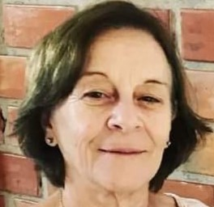

FernandaCarvalhodeProençaBraido
Profa.Rosa L Saporski
1928 - 1930
1928 - 1930
Sr. Cordovan de Mello
1933 - 1936
1933 - 1936
Sr. João Lacarkin
1937 - 1938
1937 - 1938
Sra. Alzira D. B. Paquete
1938 - 1940
1938 - 1940
Prof. Péricles de A. Busnardo
1941 - 1942
1941 - 1942

Profa. Deuacacina M. Santos
1942 - 1945
1942 - 1945
Prafa. Zelina J. Pacheco
Fev. - agost. 1945
Fev. - agost. 1945
Profa. Vera Marinho Diniz
Set. 1945 - Fev. 1946
Set. 1945 - Fev. 1946
Profa. Madalena K. D’Andrea
02/02/1946 - 1948
02/02/1946 - 1948
Prof. Ida R. Salomão
1949 - 1950
1949 - 1950

Profa. Vera Marinho Diniz
1951 - 1961
1951 - 1961
Profa. Doralice R. Sedor
Abril 1961
- Março 1964
Abril 1961
- Março 1964
Profa. Rosalba L. Resende
Março 1964
- Julho 1973
Março 1964
- Julho 1973
Profa. Hermínia R. Bergamaschi
Julho 1973
- Julho 1983
Julho 1973
- Julho 1983
Profa. Alzira Lima
Julho 1973 - Julho 1983
Julho 1973 - Julho 1983

Profa. Marli Feda Fulan
1987 - 2008
1987 - 2008
Profa. Daisy A. Larini
2009 - 2016
2009 - 2016
João Carlos Massataru
2016 - atualmente
2016 - atualmente
Diretor Militar - Simão